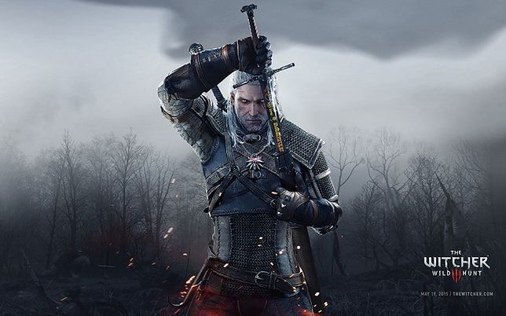
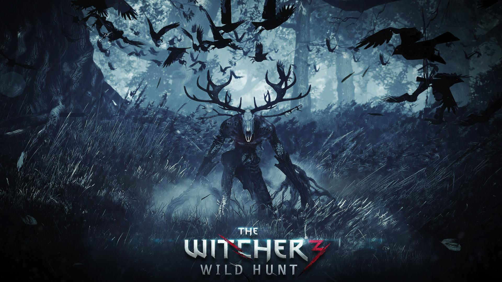

Wiedzmin 3
Jest to: fabularna gra akcji wyprodukowana i wydana przez CD Projekt Red 19 maja 2015 na platformy Microsoft Windows, PlayStation 4 i Xbox One.
Gra jest kontynuacją wydanego w 2007 roku Wiedźmina oraz Wiedźmina 2: Zabójców królów, który miał swoją premierę w 2011 roku. Tak jak poprzednie części, opowiada ona historię tytułowego wiedźmina – Geralta z Rivii – i jest osadzona w świecie wiedźmina, którego twórcą jest Andrzej Sapkowski. Produkcja jest ostatnią częścią cyklu, którego głównym bohaterem jest tytułowy wiedźmin, razem z nią stanowiącego trylogię.
Pierwszy zwiastun produkcji został zaprezentowany na konferencji Microsoftu na targach E3 w czerwcu 2013 roku. Ponadto Wiedźmin 3 zdobył tam kilkadziesiąt nagród oraz nominacji przyznanych przez czasopisma i portale z branży gier komputerowych. Wersja na Nintendo Switch została zapowiedziana na prezentacji przedsiębiorstwa na targach E3 w 2019 roku. Wersja na konsole przenośne japońskiej marki ukazała się 15 października 2019.
- Dlaczego warto zagrać w Wiedzmina 3?
- Zalety:

- Świetna grafika
- Posiada klimatyczną oprawę audio
- Posiada klimatyczne dialogi
- Dobrze zoptymalizowana
- Dobra cena
- Ciekawa oraz bardzo dobra fabuła
- Wady
- Zauważalne bugi
- Długi czas wczytywania zapisu
